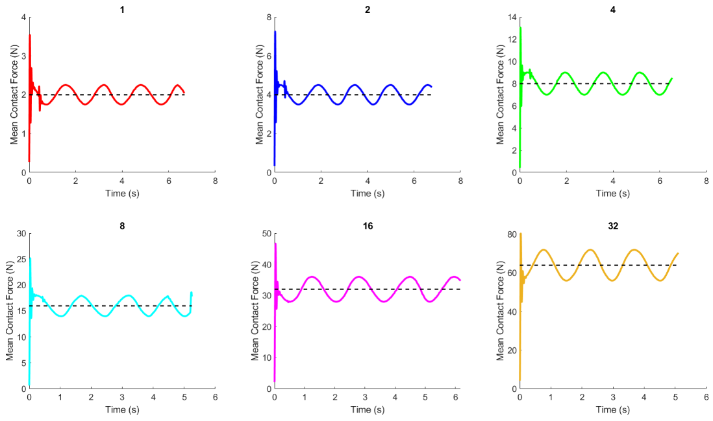
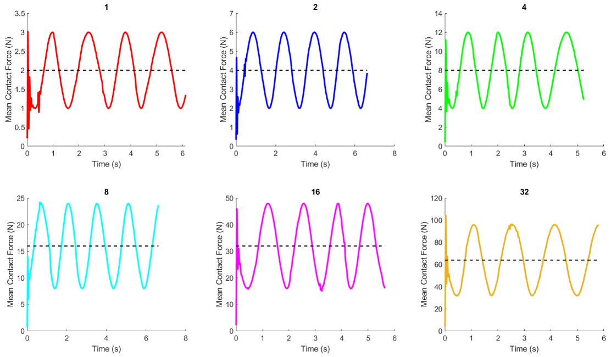
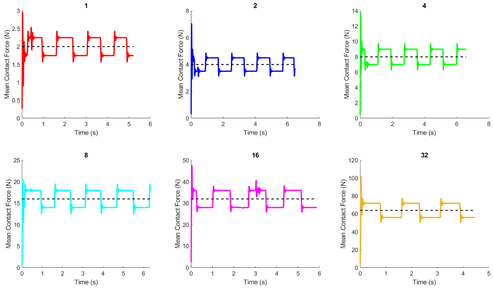
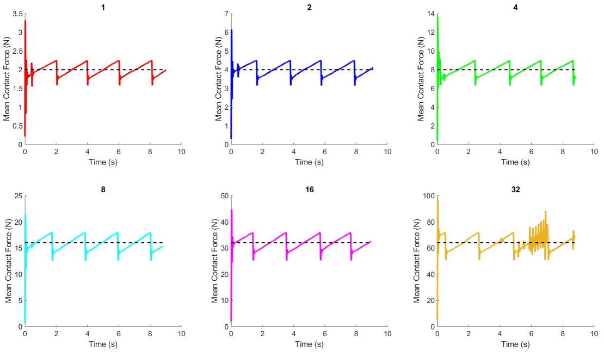
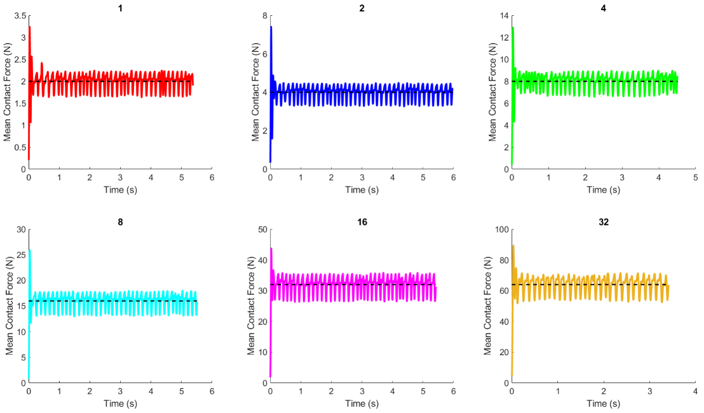

Back to homeProportional feedback control with input of 1 Hz sine wave with A/4 amplitude centered at 2A with non-optimal results.

Proportional feedback control with input of 1 Hz sine wave with A/4 amplitude centered at 2A with optimal results.

Proportional feedback control with input of 1 Hz sine wave with A amplitude centered at 2A.

Proportional feedback control with input of 1 Hz square wave with A/4 amplitude centered at 2A.

Proportional feedback control with input of 1 Hz sawtooth wave with A/4 amplitude centered at 2A.

Proportional feedback control with input of 10 Hz sawtooth wave with A/4 amplitude centered at 2A.